<title>FinancePros TV Playbook</title>
<link rel="preconnect" href="https://fonts.googleapis.com">
<link rel="preconnect" href="https://fonts.gstatic.com" crossorigin>
<link rel="stylesheet" href="https://fonts.googleapis.com/css2?family=Barlow+Condensed:ital,wght@0,600;0,700;0,800;1,800;1,900&family=Barlow:wght@400;500;600;700&display=swap">
<style>
:root{
  --red:#E10A1E; --red-dark:#B00816; --ink:#0B0B0C; --panel:#F3F3F1; --line:#DEDEDB;
  --muted:#5A5E66; --steel:#8B8F96; --up:#128A50; --white:#FFFFFF;
  --cond:"Barlow Condensed","Arial Narrow",Arial,sans-serif;
  --body:"Barlow",system-ui,-apple-system,"Segoe UI",sans-serif;
  color-scheme:light;
}
*{box-sizing:border-box}
body{background:var(--white);color:var(--ink);font:400 17px/1.6 var(--body);-webkit-font-smoothing:antialiased}
.wrap{max-width:1140px;margin-inline:auto;padding-inline:clamp(16px,4vw,40px)}
h1,h2,h3,h4{margin:0;text-wrap:balance}
p{margin:0}
:focus-visible{outline:3px solid var(--red);outline-offset:3px}
.slant{display:inline-block;transform:skewX(-12deg)}
.slant>span{display:inline-block;transform:skewX(12deg)}
.tag{font:italic 800 15px/1 var(--cond);letter-spacing:.08em;text-transform:uppercase;padding:7px 12px 5px;background:var(--red);color:#fff}
.tag.ink{background:var(--ink)}
.tag.white{background:#fff;color:var(--ink);box-shadow:inset 0 0 0 1.5px var(--ink)}

/* hero */
.hero{background:var(--ink);color:#fff;position:relative;overflow:hidden}
.hero svg.sl{position:absolute;right:0;top:0;height:100%;width:auto}
.hero .wrap{position:relative;padding-block:28px 60px}
.meta{display:flex;justify-content:space-between;flex-wrap:wrap;gap:10px;font:700 13px/1 var(--cond);letter-spacing:.14em;text-transform:uppercase;color:var(--steel)}
.lock{display:inline-flex;align-items:center;font:italic 900 1em/1 var(--cond);text-transform:uppercase;white-space:nowrap}
.lock .f{padding-right:.14em}
.lock .p{background:var(--red);color:#fff;padding:.02em .2em .02em .14em;transform:skewX(-12deg)}
.lock .p i{display:inline-block;transform:skewX(12deg);font-style:italic}
.lock .tv{margin-left:.16em;background:#fff;color:var(--ink);font-size:.36em;padding:.12em .3em .08em;transform:skewX(-12deg);align-self:flex-start;margin-top:.08em;font-weight:800}
.lock .tv i{display:inline-block;transform:skewX(12deg)}
.hero .lock{font-size:clamp(34px,6vw,64px);margin-top:clamp(40px,7vw,72px)}
.hero h1{margin-top:22px;font:italic 900 clamp(46px,8.4vw,108px)/.9 var(--cond);text-transform:uppercase;letter-spacing:-.005em}
.hero h1 em{font-style:italic;color:var(--red)}
.hero .lede{margin-top:22px;max-width:60ch;color:#D0D2D6;font-size:clamp(17px,1.7vw,19px)}
.facts{margin-top:36px;display:grid;grid-template-columns:repeat(auto-fit,minmax(min(100%,190px),1fr));gap:2px;background:#26262A}
.facts div{background:var(--ink);padding:18px 18px 16px;display:grid;gap:6px}
.facts b{font:italic 900 40px/1 var(--cond);color:#fff}
.facts span{font:600 14px/1.3 var(--cond);letter-spacing:.08em;text-transform:uppercase;color:var(--steel)}

.toc{display:flex;flex-wrap:wrap;gap:8px;padding-block:20px;border-bottom:1px solid var(--line)}
.toc a{font:700 14px/1 var(--cond);letter-spacing:.08em;text-transform:uppercase;text-decoration:none;color:var(--ink);padding:9px 12px;background:var(--panel)}
.toc a:hover{background:var(--red);color:#fff}

/* sections */
.sec{padding-block:clamp(52px,7vw,84px);border-bottom:1px solid var(--line)}
.sec-head{display:grid;gap:12px;max-width:760px}
.sec h2{font:italic 900 clamp(34px,5vw,58px)/.92 var(--cond);text-transform:uppercase}
.sec .intro{color:var(--muted);font-size:18px}
.body{margin-top:clamp(28px,4vw,44px);display:grid;gap:clamp(24px,3vw,36px)}
.body>*,.grid>*{min-width:0}
h3{font:italic 800 26px/1.05 var(--cond);text-transform:uppercase}
h4{font:700 18px/1.2 var(--body)}
.small{font-size:15px;color:var(--muted)}
.grid{display:grid;gap:18px}
.g2{grid-template-columns:repeat(auto-fit,minmax(min(100%,440px),1fr))}
.g3{grid-template-columns:repeat(auto-fit,minmax(min(100%,300px),1fr))}
.panel{background:var(--panel);padding:clamp(20px,3vw,28px)}

/* looks */
.looks{display:grid;gap:22px;grid-template-columns:repeat(3,minmax(0,1fr))}
@media (max-width:860px){.looks{grid-template-columns:minmax(0,1fr)}.look img{max-width:360px}}
.look{display:grid;gap:14px;align-content:start}
.look img{width:100%;aspect-ratio:9/16;object-fit:cover;display:block;box-shadow:0 18px 40px -22px rgba(0,0,0,.55);background:#ddd}
.look .lh{display:flex;align-items:center;gap:10px}
.look .letter{font:italic 900 44px/1 var(--cond);color:var(--red)}
.look ul{margin:0;padding-left:18px;color:var(--muted);font-size:15px;display:grid;gap:4px}
.pick{border-left:6px solid var(--red);background:var(--panel);padding:18px 22px;display:grid;gap:6px}
.pick b{font:italic 800 20px/1.1 var(--cond);text-transform:uppercase}

.covers{display:grid;gap:12px;grid-template-columns:repeat(auto-fill,minmax(150px,1fr))}
.covers figure{margin:0;display:grid;gap:8px}
.covers img{width:100%;aspect-ratio:9/16;object-fit:cover;display:block;background:#ddd}
.covers figcaption{font:700 14px/1.2 var(--cond);letter-spacing:.06em;text-transform:uppercase}
.gridprev{display:grid;grid-template-columns:minmax(0,380px) minmax(0,1fr);gap:clamp(20px,4vw,48px);align-items:start}
@media (max-width:760px){.gridprev{grid-template-columns:minmax(0,1fr)}}
.gridprev img{width:100%;display:block;border:1px solid var(--line)}

/* tables */
.tw{overflow-x:auto;border:1px solid var(--line)}
table{width:100%;border-collapse:collapse;min-width:760px}
th,td{text-align:left;vertical-align:top;padding:14px 16px;border-bottom:1px solid var(--line);font-size:15.5px}
tr:last-child td{border-bottom:0}
thead th{background:var(--ink);color:#fff;font:700 13px/1.2 var(--cond);letter-spacing:.1em;text-transform:uppercase}
td.show{font:italic 800 20px/1.05 var(--cond);text-transform:uppercase;white-space:nowrap}
td.when{font:700 15px/1.3 var(--cond);letter-spacing:.04em;white-space:nowrap;font-variant-numeric:tabular-nums}
.chip{display:inline-block;font:800 12px/1 var(--cond);letter-spacing:.08em;text-transform:uppercase;padding:5px 7px 4px;border:1.5px solid currentColor}
.chip.a{color:var(--ink)}.chip.b{color:var(--red)}.chip.c{color:var(--muted)}

/* week */
.week{display:grid;grid-template-columns:repeat(7,minmax(128px,1fr));gap:4px;min-width:920px}
.day{display:grid;gap:4px;align-content:start}
.day>b{font:italic 900 22px/1 var(--cond);text-transform:uppercase;padding:10px 10px 8px;background:var(--ink);color:#fff}
.slot{padding:10px;display:grid;gap:3px;background:var(--panel);border-left:4px solid var(--ink)}
.slot.red{border-left-color:var(--red)}
.slot.flash{background:#FDECEE;border-left-color:var(--red)}
.slot.yt{border-left-color:#5A5E66;background:#EDEEF0}
.slot.st{border-left-color:#B9BBC0;background:#FAFAF9}
.slot em{font:700 13px/1 var(--cond);letter-spacing:.06em;font-style:normal;color:var(--muted);font-variant-numeric:tabular-nums}
.slot span{font:700 15px/1.15 var(--cond);text-transform:uppercase;letter-spacing:.02em}
.legend{display:flex;flex-wrap:wrap;gap:16px;font-size:14px;color:var(--muted)}
.legend i{display:inline-block;width:14px;height:14px;vertical-align:-2px;margin-right:6px}

/* engine */
.flow{display:grid;grid-template-columns:repeat(auto-fit,minmax(min(100%,160px),1fr));gap:4px;counter-reset:s}
.step{background:var(--ink);color:#fff;padding:18px 16px;display:grid;gap:8px;align-content:start;position:relative}
.step:nth-child(odd){background:#1A1A1D}
.step b{font:italic 900 22px/1 var(--cond);text-transform:uppercase}
.step b::before{counter-increment:s;content:counter(s) ". ";color:var(--red)}
.step p{font-size:14.5px;color:#C9CBD0;line-height:1.45}
.step em{font:700 12px/1 var(--cond);letter-spacing:.1em;text-transform:uppercase;color:var(--steel);font-style:normal}
.trig{list-style:none;margin:0;padding:0;display:grid;gap:0}
.trig li{display:grid;grid-template-columns:minmax(0,1fr) auto;gap:4px 16px;padding:12px 0;border-bottom:1px solid var(--line)}
.trig li:last-child{border-bottom:0}
.trig li b{font-weight:600}
.trig li span{font:800 15px/1.4 var(--cond);letter-spacing:.04em;color:var(--red);text-align:right;white-space:nowrap}
.checks{list-style:none;margin:0;padding:0;display:grid;gap:10px}
.checks li{padding-left:30px;position:relative}
.checks li::before{content:"";position:absolute;left:0;top:.35em;width:16px;height:16px;background:var(--red);transform:skewX(-12deg)}

/* hooks */
.hooks{display:grid;gap:2px;grid-template-columns:repeat(auto-fit,minmax(min(100%,340px),1fr));background:var(--line);border:1px solid var(--line)}
.hook{background:#fff;padding:18px 20px;display:grid;gap:6px}
.hook b{font:800 13px/1 var(--cond);letter-spacing:.1em;text-transform:uppercase;color:var(--red)}
.hook q{font:italic 800 22px/1.15 var(--cond);quotes:"\201C" "\201D"}
.hook p{font-size:14.5px;color:var(--muted)}

/* score */
.score td:nth-child(2){font:800 18px/1 var(--cond);color:var(--red);white-space:nowrap}

/* launch */
.phases{display:grid;gap:4px}
.phase{display:grid;grid-template-columns:minmax(0,200px) minmax(0,1fr);gap:20px;padding:20px;background:var(--panel)}
@media (max-width:640px){.phase{grid-template-columns:minmax(0,1fr)}}
.phase .when{display:grid;gap:6px;align-content:start}
.phase .when b{font:italic 900 26px/1 var(--cond);text-transform:uppercase}
.phase .when span{font:700 13px/1 var(--cond);letter-spacing:.1em;text-transform:uppercase;color:var(--muted)}
.phase ul{margin:0;padding-left:18px;display:grid;gap:6px}

.kpis{display:grid;gap:2px;grid-template-columns:repeat(auto-fit,minmax(min(100%,220px),1fr));background:var(--line);border:1px solid var(--line)}
.kpi{background:#fff;padding:20px;display:grid;gap:6px;align-content:start}
.kpi b{font:italic 900 42px/1 var(--cond);color:var(--ink)}
.kpi span{font:700 14px/1.2 var(--cond);letter-spacing:.08em;text-transform:uppercase}
.kpi p{font-size:14.5px;color:var(--muted)}

.rules{display:grid;gap:12px;grid-template-columns:repeat(auto-fit,minmax(min(100%,300px),1fr))}
.rule{border-top:4px solid var(--ink);padding-top:14px;display:grid;gap:6px}
.rule.no{border-top-color:var(--red)}


/* voice */
.voices{display:grid;gap:12px;grid-template-columns:repeat(auto-fit,minmax(min(100%,250px),1fr))}
.vo{background:var(--ink);color:#fff;padding:18px;display:grid;gap:10px;align-content:start}
.vo b{font:italic 900 24px/1 var(--cond);text-transform:uppercase}
.vo span{font:700 13px/1.3 var(--cond);letter-spacing:.08em;text-transform:uppercase;color:var(--steel)}
.vo p{font-size:14.5px;color:#C9CBD0}
.vo audio{width:100%;height:36px}
.vo.rec{box-shadow:inset 0 0 0 3px var(--red)}
.vid{display:grid;grid-template-columns:minmax(0,300px) minmax(0,1fr);gap:clamp(20px,4vw,44px);align-items:start}
@media (max-width:720px){.vid{grid-template-columns:minmax(0,1fr)}}
.vid video{width:100%;aspect-ratio:9/16;background:#000;display:block}
.lic td:nth-child(2){white-space:nowrap;font:700 15px/1.3 var(--cond);letter-spacing:.04em}
.ok{color:var(--up);font-weight:700}.bad{color:var(--red);font-weight:700}
footer{padding-block:32px 48px;color:var(--muted);font-size:14px}
footer .wrap{display:flex;justify-content:space-between;gap:16px;flex-wrap:wrap;align-items:center}
footer .lock{font-size:22px;color:var(--ink)}
footer .lock .tv{background:var(--ink);color:#fff}
</style>

<header class="hero">
  <svg class="sl" viewBox="0 0 400 600" preserveAspectRatio="xMaxYMid slice" aria-hidden="true"><polygon points="330,0 400,0 400,600 200,600" fill="#E10A1E" opacity=".9"/><polygon points="290,0 312,0 182,600 160,600" fill="#E10A1E" opacity=".45"/></svg>
  <div class="wrap">
    <div class="meta"><span>Content playbook · v1 · September 2026</span><span>@financeprostv</span></div>
    <div class="lock" aria-label="FinancePros TV"><span class="f">Finance</span><span class="p"><i>Pros</i></span><span class="tv"><i>TV</i></span></div>
    <h1>What we post,<br>when, and <em>how it runs itself</em></h1>
    <p class="lede">A daily, live-updated money news channel on Instagram, TikTok, YouTube and Facebook. This playbook covers the video looks to choose from, the show lineup, the weekly calendar, how breaking news gets posted automatically, and the plan for the first 90 days.</p>
    <div class="facts">
      <div><b>3</b><span>Scheduled shows every weekday</span></div>
      <div><b>≤30 min</b><span>From breaking news to posted Flash</span></div>
      <div><b>45–60 s</b><span>Length of a standard episode</span></div>
      <div><b>4</b><span>Platforms, one video each time</span></div>
      <div><b>19–23</b><span>Videos a week, plus daily Stories</span></div>
    </div>
  </div>
</header>

<nav class="wrap toc" aria-label="Sections">
  <a href="#looks">Pick a look</a><a href="#covers">Covers &amp; grid</a><a href="#shows">The shows</a><a href="#week">Weekly calendar</a><a href="#voice">Voice</a><a href="#live">Live news engine</a><a href="#stories">Choosing stories</a><a href="#hooks">Hooks</a><a href="#growth">Growth</a><a href="#platforms">Platforms</a><a href="#launch">Launch plan</a><a href="#numbers">Numbers</a><a href="#rules">Rules</a>
</nav>

<main>
<section class="sec" id="looks">
  <div class="wrap">
    <div class="sec-head"><span><span class="tag slant"><span>Renderings</span></span></span><h2>Pick a look for the videos</h2><p class="intro">Three video styles, all in the FinancePros TV colors. Each one is a real 1080 × 1920 frame, with the headline, chart, captions and ticker placed inside the areas the platforms' buttons don't cover. The numbers are sample data.</p></div>
    <div class="body">
      <div class="looks">
        <div class="look">
          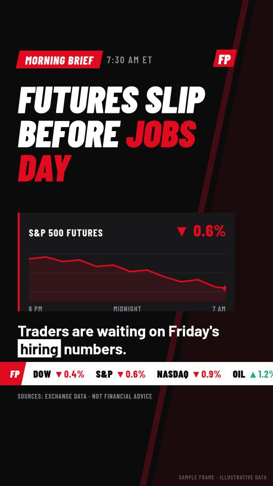
          <div class="lh"><span class="letter">A</span><h3>Newsdesk</h3></div>
          <ul><li>Black studio background with a live chart panel</li><li>Feels like a real TV newsroom</li><li>Best for Morning Brief and Closing Bell</li></ul>
        </div>
        <div class="look">
          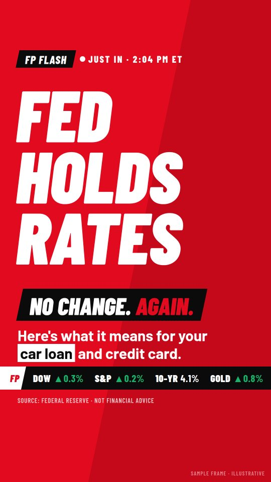
          <div class="lh"><span class="letter">B</span><h3>Flash</h3></div>
          <ul><li>Solid red, huge three-word headline</li><li>Impossible to scroll past</li><li>Best for breaking news and Week in 60</li></ul>
        </div>
        <div class="look">
          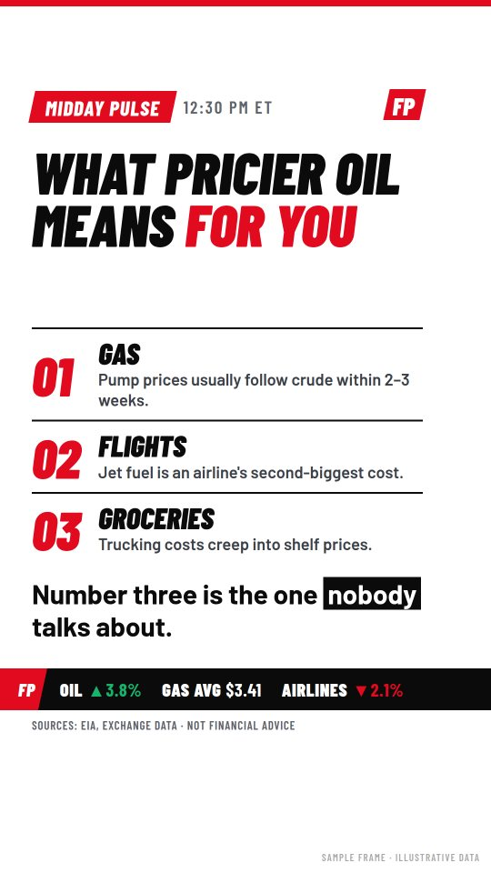
          <div class="lh"><span class="letter">C</span><h3>Explainer</h3></div>
          <ul><li>White, numbered, easy to follow</li><li>Built to be saved and shared</li><li>Best for Midday Pulse and Money Explained</li></ul>
        </div>
      </div>
      <div class="pick"><b>My recommendation: use all three, each for one job</b><p>Viewers learn that red means breaking, black means the daily update and white means an explainer. The feed stays varied without looking random. If you'd rather keep a single look, go with A (Newsdesk). It works for every show.</p></div>
    </div>
  </div>
</section>

<section class="sec" id="covers">
  <div class="wrap">
    <div class="sec-head"><span><span class="tag slant"><span>Renderings</span></span></span><h2>Series covers and the profile grid</h2><p class="intro">Every series gets its own cover, so the profile grid reads like a TV guide. Covers are 1080 × 1920, with everything important inside the middle area that shows in the grid.</p></div>
    <div class="body">
      <div class="covers">
        <figure>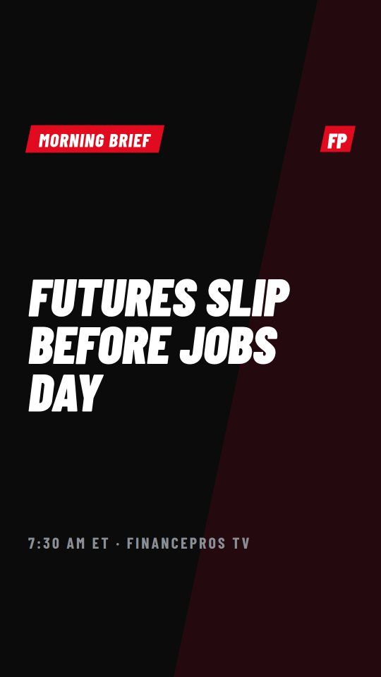<figcaption>Morning Brief</figcaption></figure>
        <figure>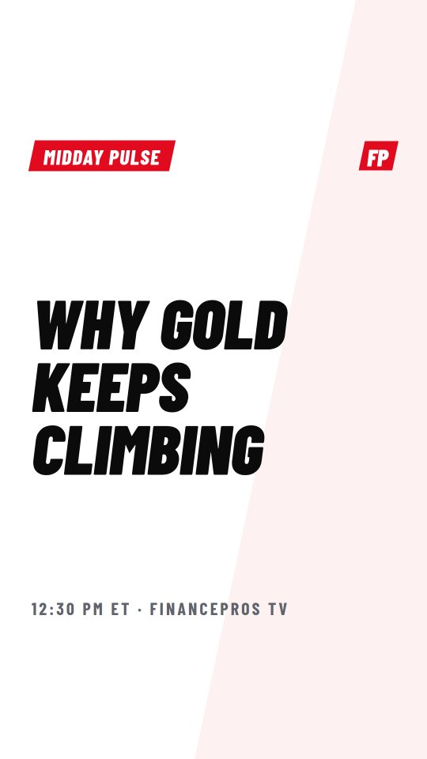<figcaption>Midday Pulse</figcaption></figure>
        <figure>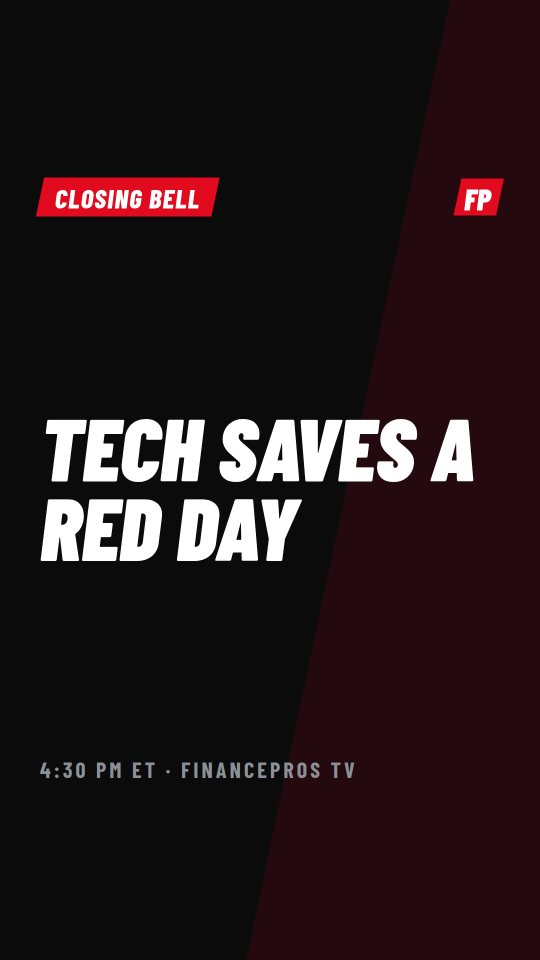<figcaption>Closing Bell</figcaption></figure>
        <figure>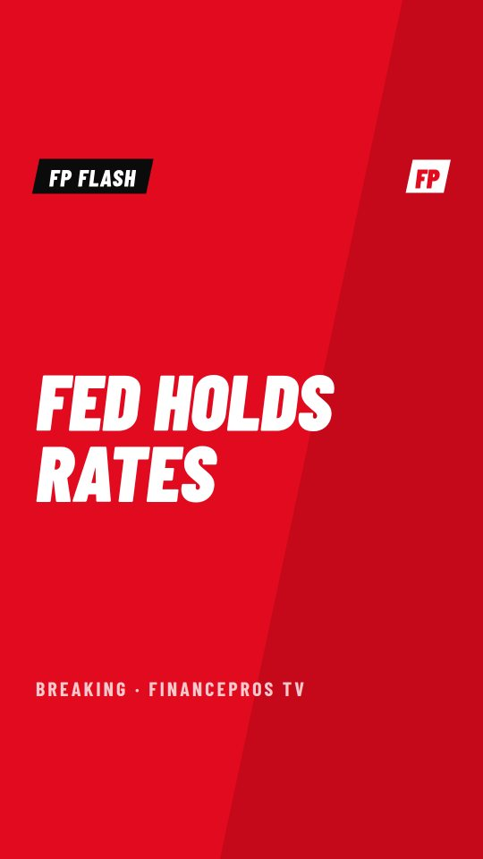<figcaption>FP Flash</figcaption></figure>
        <figure>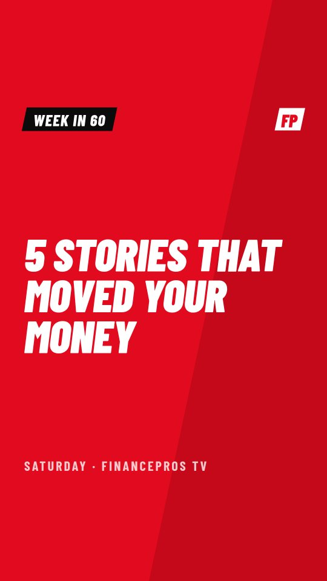<figcaption>Week in 60</figcaption></figure>
        <figure>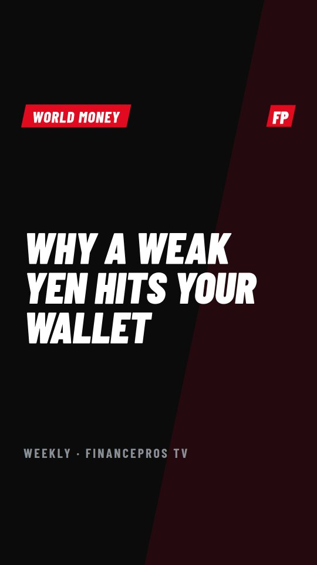<figcaption>World Money</figcaption></figure>
        <figure>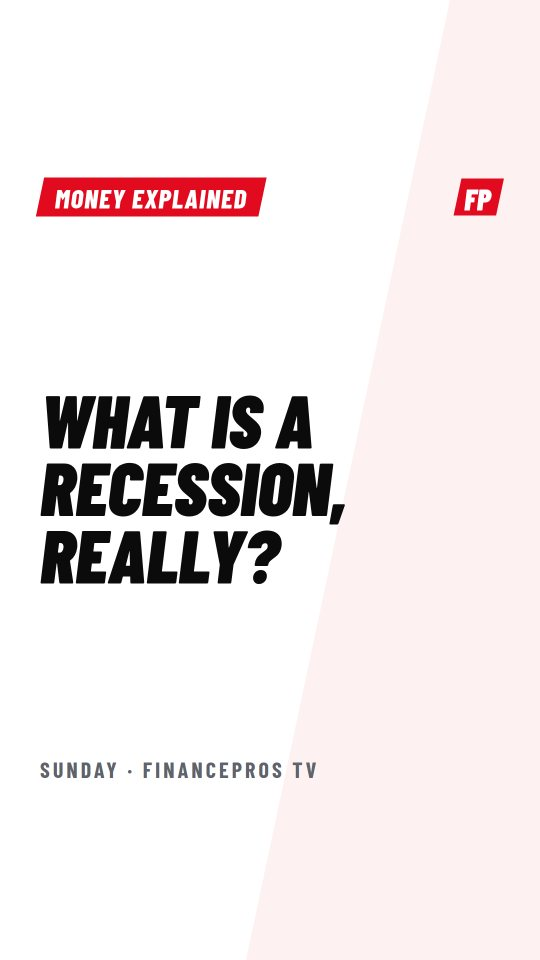<figcaption>Money Explained</figcaption></figure>
        <figure>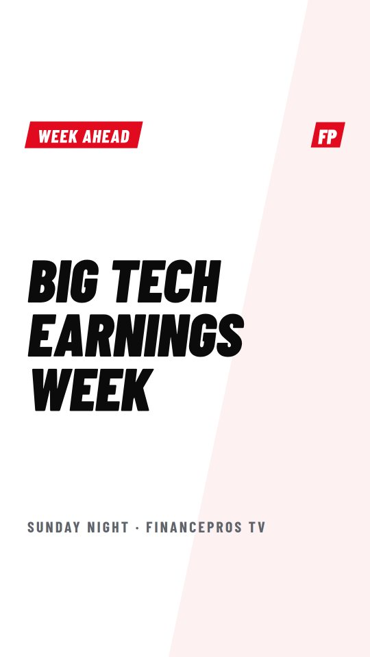<figcaption>Week Ahead</figcaption></figure>
        <figure>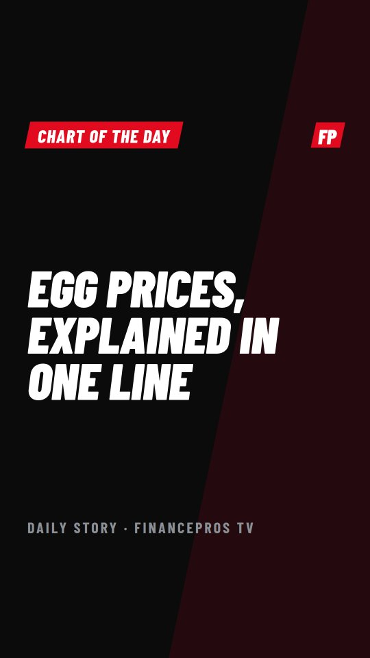<figcaption>Chart of the Day</figcaption></figure>
      </div>
      <div class="gridprev">
        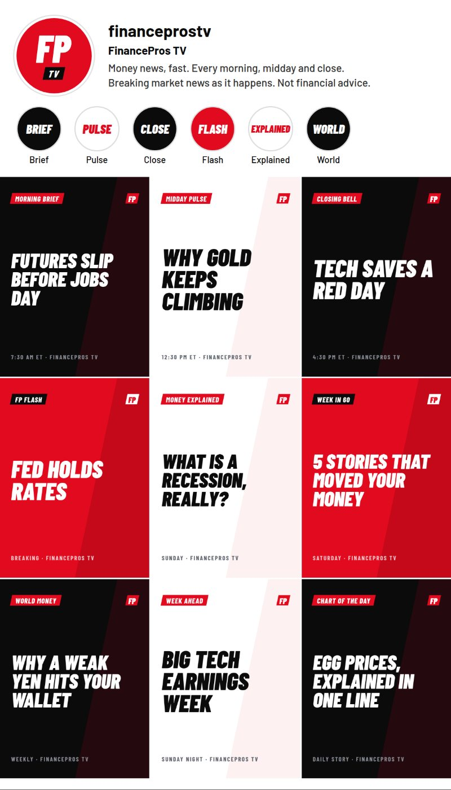
        <div style="display:grid;gap:18px;align-content:start">
          <h3>How the profile looks on day one</h3>
          <p>The first nine posts should be one of each series, so a new visitor sees the full lineup at a glance. After that, the grid fills naturally in black, white and red.</p>
          <ul class="checks">
            <li>Profile picture: the red FP with the TV tag.</li>
            <li>Highlights: Brief, Pulse, Close, Flash, Explained, World.</li>
            <li>Pin 3 posts: the best explainer, the latest Week in 60, and a "Start here" intro.</li>
            <li>Bio: "Money news, fast. Every morning, midday and close. Breaking market news as it happens. Not financial advice."</li>
          </ul>
        </div>
      </div>
    </div>
  </div>
</section>

<section class="sec" id="shows">
  <div class="wrap">
    <div class="sec-head"><span><span class="tag slant"><span>Lineup</span></span></span><h2>The shows</h2><p class="intro">Three fixed shows every weekday, breaking news in between, and four weekend shows that keep the channel alive when markets are closed. All times are Eastern.</p></div>
    <div class="body">
      <div class="tw"><table>
        <thead><tr><th>Show</th><th>When</th><th>Length</th><th>Look</th><th>What's in it</th><th>Example</th></tr></thead>
        <tbody>
          <tr><td class="show">Morning Brief</td><td class="when">Weekdays 7:30 AM</td><td class="when">45–60 s</td><td><span class="chip a">A</span></td><td>What happened overnight in Asia and Europe, where futures are, and the one thing to watch today (a data release or big earnings).</td><td>"Futures slip before jobs day"</td></tr>
          <tr><td class="show">Midday Pulse</td><td class="when">Weekdays 12:30 PM</td><td class="when">45–60 s</td><td><span class="chip c">C</span></td><td>The day's biggest story explained through "what it means for you": gas, rent, loans, jobs, prices.</td><td>"What pricier oil means for you"</td></tr>
          <tr><td class="show">Closing Bell</td><td class="when">Weekdays 4:30 PM</td><td class="when">45–60 s</td><td><span class="chip a">A</span></td><td>How the day ended, the biggest winner and loser and why, and what's coming after hours.</td><td>"Tech saves a red day"</td></tr>
          <tr><td class="show">FP Flash</td><td class="when">Within 30 min of news</td><td class="when">15–30 s</td><td><span class="chip b">B</span></td><td>Breaking news only: what happened, in three words and one sentence, plus what it means. At most 2 a day.</td><td>"Fed holds rates"</td></tr>
          <tr><td class="show">Chart of the Day</td><td class="when">Daily, Stories</td><td class="when">1 slide</td><td><span class="chip a">A</span></td><td>One surprising chart with one line of explanation. Re-cut the best ones as Reels.</td><td>"Egg prices, explained in one line"</td></tr>
          <tr><td class="show">Week in 60</td><td class="when">Saturday 10 AM</td><td class="when">60 s</td><td><span class="chip b">B</span></td><td>The five stories that moved money this week, 12 seconds each.</td><td>"5 stories that moved your money"</td></tr>
          <tr><td class="show">World Money</td><td class="when">Saturday 3 PM</td><td class="when">60–75 s</td><td><span class="chip a">A</span></td><td>One global story (currencies, oil, trade, elections abroad) and how it reaches your wallet.</td><td>"Why a weak yen hits your wallet"</td></tr>
          <tr><td class="show">Money Explained</td><td class="when">Sunday 11 AM</td><td class="when">60–90 s</td><td><span class="chip c">C</span></td><td>An evergreen explainer. These keep getting views for months, so build a numbered library.</td><td>"What is a recession, really?"</td></tr>
          <tr><td class="show">Week Ahead</td><td class="when">Sunday 6 PM</td><td class="when">45–60 s</td><td><span class="chip c">C</span></td><td>The calendar for the coming week: big earnings, data releases and Fed speakers, with the day each one lands.</td><td>"Big Tech earnings week"</td></tr>
          <tr><td class="show">This Week in Money</td><td class="when">Saturday 9 AM, YouTube</td><td class="when">8–12 min</td><td><span class="chip a">A</span></td><td>A long-form YouTube episode built from the week's clips, with extra context between them. This is the channel's main long-form income later.</td><td>Weekly recap</td></tr>
        </tbody>
      </table></div>

      <div class="grid g3">
        <div class="panel"><h3>Standard episode beats</h3>
          <ul class="checks" style="margin-top:14px">
            <li><b>0–3 s, hook:</b> the headline is on screen and spoken first. No intro.</li>
            <li><b>3–5 s, bumper:</b> the red slash wipe and the show name.</li>
            <li><b>5–20 s, what happened:</b> the chart or key number.</li>
            <li><b>20–40 s, why it matters:</b> what it means for you.</li>
            <li><b>40–52 s, what's next:</b> the next date or number to watch.</li>
            <li><b>52–60 s, sign-off:</b> "That's the money. See you at the next bell."</li>
          </ul></div>
        <div class="panel"><h3>Flash beats</h3>
          <ul class="checks" style="margin-top:14px">
            <li><b>0–2 s:</b> "Breaking:" plus three words on red.</li>
            <li><b>2–12 s:</b> the facts in one sentence, with the source named.</li>
            <li><b>12–25 s:</b> what it means for you.</li>
            <li><b>Last 3 s:</b> "Full breakdown at the Closing Bell."</li>
          </ul></div>
        <div class="panel"><h3>Daily Stories</h3>
          <ul class="checks" style="margin-top:14px">
            <li><b>8 AM:</b> poll, "Will stocks close green today?" The answer comes in Closing Bell.</li>
            <li><b>Noon:</b> Chart of the Day.</li>
            <li><b>After each post:</b> share the Reel to Stories with a "New" sticker.</li>
            <li><b>Evening:</b> Number of the Day, one big figure and one line.</li>
          </ul></div>
      </div>
    </div>
  </div>
</section>

<section class="sec" id="week">
  <div class="wrap">
    <div class="sec-head"><span><span class="tag slant"><span>Calendar</span></span></span><h2>A normal week</h2><p class="intro">15 scheduled weekday videos, 4 on the weekend, 1 long-form YouTube episode, and up to 2 Flash videos a day when news breaks.</p></div>
    <div class="body">
      <div class="tw" style="border:0"><div class="week">
        <div class="day"><b>Mon</b><div class="slot st"><em>8:00</em><span>Story poll</span></div><div class="slot"><em>7:30</em><span>Morning Brief</span></div><div class="slot"><em>12:30</em><span>Midday Pulse</span></div><div class="slot flash"><em>As needed</em><span>FP Flash</span></div><div class="slot"><em>4:30</em><span>Closing Bell</span></div></div>
        <div class="day"><b>Tue</b><div class="slot st"><em>8:00</em><span>Story poll</span></div><div class="slot"><em>7:30</em><span>Morning Brief</span></div><div class="slot"><em>12:30</em><span>Midday Pulse</span></div><div class="slot flash"><em>As needed</em><span>FP Flash</span></div><div class="slot"><em>4:30</em><span>Closing Bell</span></div></div>
        <div class="day"><b>Wed</b><div class="slot st"><em>8:00</em><span>Story poll</span></div><div class="slot"><em>7:30</em><span>Morning Brief</span></div><div class="slot"><em>12:30</em><span>Midday Pulse</span></div><div class="slot flash"><em>2:00 on Fed days</em><span>FP Flash: Fed</span></div><div class="slot"><em>4:30</em><span>Closing Bell</span></div></div>
        <div class="day"><b>Thu</b><div class="slot st"><em>8:00</em><span>Story poll</span></div><div class="slot"><em>7:30</em><span>Morning Brief</span></div><div class="slot"><em>12:30</em><span>Midday Pulse</span></div><div class="slot flash"><em>As needed</em><span>FP Flash</span></div><div class="slot"><em>4:30</em><span>Closing Bell</span></div></div>
        <div class="day"><b>Fri</b><div class="slot flash"><em>8:45, jobs Fridays</em><span>FP Flash: Jobs</span></div><div class="slot"><em>7:30</em><span>Morning Brief</span></div><div class="slot"><em>12:30</em><span>Midday Pulse</span></div><div class="slot"><em>4:30</em><span>Closing Bell</span></div></div>
        <div class="day"><b>Sat</b><div class="slot yt"><em>9:00</em><span>This Week in Money (YouTube)</span></div><div class="slot red"><em>10:00</em><span>Week in 60</span></div><div class="slot"><em>3:00</em><span>World Money</span></div></div>
        <div class="day"><b>Sun</b><div class="slot red"><em>11:00</em><span>Money Explained</span></div><div class="slot"><em>6:00</em><span>Week Ahead</span></div><div class="slot st"><em>7:00</em><span>Story: weekly Q&amp;A box</span></div></div>
      </div></div>
      <div class="legend"><span><i style="background:var(--ink)"></i>Scheduled show</span><span><i style="background:var(--red)"></i>Red look or breaking</span><span><i style="background:#5A5E66"></i>YouTube long-form</span><span><i style="background:#B9BBC0"></i>Stories only</span></div>
    </div>
  </div>
</section>

<section class="sec" id="voice">
  <div class="wrap">
    <div class="sec-head"><span><span class="tag slant"><span>Voice</span></span></span><h2>A unique voice, for $0</h2><p class="intro">Every video is narrated by one signature AI voice. It runs on free, open-source voice software that's allowed for commercial use, so there's no monthly bill. The four samples below were generated for free, with the same Morning Brief script (sample news). Tap to listen.</p></div>
    <div class="body">
      <div class="voices">
        <div class="vo rec"><span>Option 1 · My pick</span><b>The Anchor</b><p>A custom blend of two male voices: calm, deep and credible. Sounds like a news desk.</p><audio controls preload="none" src="voice/voice-1-anchor-blend.mp3"></audio></div>
        <div class="vo"><span>Option 2</span><b>The Host</b><p>A custom blend of two female voices: warm, clear and friendly. Great for explainers.</p><audio controls preload="none" src="voice/voice-2-host-blend.mp3"></audio></div>
        <div class="vo"><span>Option 3</span><b>The London Desk</b><p>A blend of two British male voices. Sounds premium and stands out in US feeds.</p><audio controls preload="none" src="voice/voice-3-british-desk.mp3"></audio></div>
        <div class="vo"><span>Option 4</span><b>The Hype</b><p>A faster, brighter blend. Best for FP Flash and Week in 60.</p><audio controls preload="none" src="voice/voice-4-energetic-blend.mp3"></audio></div>
      </div>

      <div class="vid">
        <video controls playsinline preload="none" poster="web/style-a-newsdesk.jpg" src="voice/sample-morning-brief-with-voice.mp4"></video>
        <div style="display:grid;gap:16px;align-content:start">
          <h3>Sample: Newsdesk frame + The Anchor</h3>
          <p>This is a still frame with a slow zoom and the voiceover, made entirely with free tools. The real videos add the animated chart, word-by-word captions, the slash wipes and a music bed.</p>
          <h3 style="margin-top:8px">Why each voice is unique</h3>
          <ul class="checks">
            <li><b>Blended voices:</b> each option mixes two base voices into a new one, so it isn't the same stock voice other channels use.</li>
            <li><b>Your own voice (optional):</b> record 20–30 seconds of clean speech, and a free cloning model turns it into the narrator. Only clone a voice you own or have written permission to use.</li>
            <li><b>Signature sound:</b> the same audio processing on every video (clean-up, compression and loudness), a 2-note news sting and one music bed.</li>
          </ul>
        </div>
      </div>

      <div class="tw"><table class="lic">
        <thead><tr><th>Free voice engine</th><th>License</th><th>Good for</th><th>Use it?</th></tr></thead>
        <tbody>
          <tr><td><b>Kokoro</b> (used for these samples)</td><td>Apache 2.0</td><td>Natural voices that run on a normal computer, no graphics card needed. Voices can be blended into a new one.</td><td class="ok">Yes: main voice</td></tr>
          <tr><td><b>Chatterbox</b> (Resemble AI)</td><td>MIT</td><td>Very expressive, with an emotion-intensity control, and can clone a voice from a short clip. Runs best on a free cloud GPU (Google Colab or Kaggle).</td><td class="ok">Yes: for Flash energy or your own cloned voice</td></tr>
          <tr><td><b>Piper</b></td><td>MIT (each voice has its own license)</td><td>Extremely fast and lightweight. Good as a backup if the main engine fails.</td><td class="ok">Yes: backup, check each voice's license</td></tr>
          <tr><td><b>Coqui XTTS-v2</b>, <b>F5-TTS</b> model weights</td><td>Non-commercial</td><td>Good quality, but the licenses don't allow monetized channels.</td><td class="bad">No</td></tr>
          <tr><td>"Read aloud" browser voices via unofficial tools</td><td>Not licensed for this</td><td>Free to try, but not licensed for commercial videos, and they can stop working at any time.</td><td class="bad">No</td></tr>
        </tbody>
      </table></div>
      <p class="small">Check each project's license file again before launch, because licenses can change. Music: use tracks from YouTube's free Audio Library, or other royalty-free libraries whose license covers all four platforms.</p>

      <div class="grid g3">
        <div class="rule"><h4>Write for the ear</h4><p class="small">Short sentences. Contractions. One idea per sentence. Put the key word at the end, where the voice lands on it.</p></div>
        <div class="rule"><h4>Pace</h4><p class="small">Speed 1.05–1.12× for shows and up to 1.15× for Flash. About 150–170 words for a 60-second video.</p></div>
        <div class="rule"><h4>Numbers</h4><p class="small">Write them the way they're said: "about half a percent", "eight thirty Friday". Exact figures go on screen.</p></div>
      </div>
    </div>
  </div>
</section>

<section class="sec" id="live">
  <div class="wrap">
    <div class="sec-head"><span><span class="tag slant"><span>Automation</span></span></span><h2>The live news engine</h2><p class="intro">This is how the channel stays live-updated without you making each video. Scheduled shows run on a timer. Breaking news is caught by triggers that watch the markets and the news all day.</p></div>
    <div class="body">
      <div class="flow">
        <div class="step"><em>Always on</em><b>Watch</b><p>Pull market prices, the economic calendar, official releases and news headlines every few minutes.</p></div>
        <div class="step"><em>T-45 min or trigger</em><b>Pick</b><p>Score the candidate stories (see below) and choose the top one.</p></div>
        <div class="step"><em>2 min</em><b>Write</b><p>Claude writes the script from the brand's rules, hooks and beats, citing the source for every number.</p></div>
        <div class="step"><em>1 min</em><b>Check</b><p>An automatic pass compares every number in the script with the source data and blocks anything that doesn't match.</p></div>
        <div class="step"><em>3 min</em><b>Voice</b><p>The locked AI narrator voice reads the script, and captions are timed word by word.</p></div>
        <div class="step"><em>5 min</em><b>Render</b><p>The script and data fill the A, B or C template. Numbers are refreshed at render time.</p></div>
        <div class="step"><em>Up to 10 min</em><b>Approve</b><p>A phone notification with the video. Tap to approve. Skipped once the error rate is near zero.</p></div>
        <div class="step"><em>On time</em><b>Post</b><p>Metricool publishes to all four platforms with the caption, hashtags and cover.</p></div>
      </div>

      <div class="grid g2">
        <div class="panel">
          <h3>What triggers an FP Flash</h3>
          <ul class="trig" style="margin-top:10px">
            <li><b>S&amp;P 500 or Nasdaq moves sharply intraday</b><span>±1.5% or more</span></li>
            <li><b>A top-10 company by size moves</b><span>±5% or more</span></li>
            <li><b>Fed rate decision or emergency move</b><span>Always</span></li>
            <li><b>Jobs report, CPI or GDP release</b><span>Always</span></li>
            <li><b>Oil</b><span>±5% or more</span></li>
            <li><b>Bitcoin</b><span>±7% or more</span></li>
            <li><b>Deal, bankruptcy or CEO exit at a major company</b><span>Deals over $10B</span></li>
            <li><b>World event with a clear market reaction</b><span>2 sources + a market move</span></li>
          </ul>
          <p class="small" style="margin-top:12px">These thresholds are starting points. Tune them after the first month so Flash stays special (about 3–6 a week).</p>
        </div>
        <div class="panel">
          <h3>Scheduled big days (templates built in advance)</h3>
          <ul class="trig" style="margin-top:10px">
            <li><b>Jobs report</b><span>Usually 1st Friday, 8:30 AM</span></li>
            <li><b>CPI inflation</b><span>Monthly, 8:30 AM</span></li>
            <li><b>Fed rate decision</b><span>8 times a year, 2:00 PM</span></li>
            <li><b>Big Tech earnings</b><span>Late Jan, Apr, Jul, Oct</span></li>
            <li><b>Earnings season kicks off with big banks</b><span>Mid Jan, Apr, Jul, Oct</span></li>
            <li><b>GDP</b><span>Quarterly, 8:30 AM</span></li>
          </ul>
          <p class="small" style="margin-top:12px">On these days the Flash template is ready the night before, and the engine only fills in the result once the number is out.</p>
        </div>
      </div>

      <div class="grid g3">
        <div class="rule"><h4>Fresh numbers</h4><p class="small">Prices are pulled again at render time. Every video shows "as of" the time on screen, so older videos never look wrong.</p></div>
        <div class="rule"><h4>Two sources</h4><p class="small">Breaking news needs an official source or two independent outlets before it posts. Rumors never post.</p></div>
        <div class="rule no"><h4>Corrections</h4><p class="small">If something is wrong, delete it or pin a correction within an hour and fix the source of the error in the pipeline.</p></div>
      </div>
    </div>
  </div>
</section>

<section class="sec" id="stories">
  <div class="wrap">
    <div class="sec-head"><span><span class="tag slant"><span>Editorial</span></span></span><h2>How a story gets picked</h2><p class="intro">Each candidate story gets a score out of 25. The highest score gets the slot. This is what stops the channel from covering stories only traders care about.</p></div>
    <div class="body">
      <div class="tw"><table class="score">
        <thead><tr><th>Question</th><th>Points</th><th>Example of a 5</th></tr></thead>
        <tbody>
          <tr><td>Does it touch a normal person's wallet?</td><td>× 2 (up to 10)</td><td>Mortgage rates, gas prices, layoffs at a household-name company</td></tr>
          <tr><td>How big is the move or the number?</td><td>up to 5</td><td>Biggest one-day drop in months</td></tr>
          <tr><td>Is it a surprise?</td><td>up to 5</td><td>A result far from what experts expected</td></tr>
          <tr><td>Can it be shown in one picture?</td><td>up to 5</td><td>A clean chart, a map or a before-and-after</td></tr>
        </tbody>
      </table></div>
      <div class="grid g2">
        <div class="panel"><h3>Cover more of this</h3><ul class="checks" style="margin-top:12px"><li>Prices people pay: gas, groceries, rent, flights</li><li>Rates: mortgages, car loans, savings accounts, credit cards</li><li>Jobs and layoffs</li><li>Brands people know: Apple, Nike, Costco, Tesla, Netflix</li><li>World events explained through money</li></ul></div>
        <div class="panel"><h3>Cover less of this</h3><ul class="checks" style="margin-top:12px"><li>Small moves in obscure stocks</li><li>Technical chart patterns and trading signals</li><li>Crypto coins outside the top two</li><li>Political opinion of any kind</li><li>Anything that sounds like a stock tip</li></ul></div>
      </div>
    </div>
  </div>
</section>

<section class="sec" id="hooks">
  <div class="wrap">
    <div class="sec-head"><span><span class="tag slant"><span>Retention</span></span></span><h2>Ten hooks that work</h2><p class="intro">The first two seconds decide whether anyone watches. The script writer rotates through these, and the weekly review drops the ones that underperform.</p></div>
    <div class="body">
      <div class="hooks">
        <div class="hook"><b>The number</b><q>4%. That's how much oil jumped today.</q><p>Lead with the figure, then explain it.</p></div>
        <div class="hook"><b>It's about you</b><q>If you have a car loan, this matters.</q><p>Name the viewer's situation in the first line.</p></div>
        <div class="hook"><b>The question</b><q>Why is gold at a record when stocks are too?</q><p>A real puzzle the video answers.</p></div>
        <div class="hook"><b>The contrast</b><q>Stocks fell. One company jumped 20%.</q><p>Two facts that don't seem to fit together.</p></div>
        <div class="hook"><b>The countdown</b><q>Three things that moved your money today.</q><p>Tells people how long to stay.</p></div>
        <div class="hook"><b>The myth</b><q>A Fed cut doesn't lower your mortgage overnight.</q><p>Corrects something people believe.</p></div>
        <div class="hook"><b>Just now</b><q>Ten minutes ago, the Fed made its call.</q><p>For Flash videos only.</p></div>
        <div class="hook"><b>Then vs now</b><q>What $100 bought in 2020, and what it buys now.</q><p>Works well with a split screen.</p></div>
        <div class="hook"><b>In 30 seconds</b><q>What a recession actually is, in 30 seconds.</q><p>For Money Explained.</p></div>
        <div class="hook"><b>Tomorrow</b><q>Tomorrow at 8:30, one number moves everything.</q><p>For Week Ahead and the day before big data.</p></div>
      </div>
    </div>
  </div>
</section>

<section class="sec" id="growth">
  <div class="wrap">
    <div class="sec-head"><span><span class="tag slant"><span>Growth</span></span></span><h2>Getting people to follow, comment and share</h2></div>
    <div class="body grid g3">
      <div class="rule"><h4>The poll loop</h4><p class="small">The morning Story asks "Green or red today?" The Closing Bell opens with the answer. People come back to see if they were right.</p></div>
      <div class="rule"><h4>Pinned question</h4><p class="small">Every video gets a pinned comment with one simple question, like "Did you notice gas going up?" Comments help reach.</p></div>
      <div class="rule"><h4>Answer with a video</h4><p class="small">Once a week, turn the best comment question into a Money Explained episode and tag the person who asked.</p></div>
      <div class="rule"><h4>Numbered series</h4><p class="small">"Money Explained #12" makes people want the whole set. Save each series as a playlist and a highlight.</p></div>
      <div class="rule"><h4>Same time, every day</h4><p class="small">Fixed times train the audience and the algorithm. Never skip a Closing Bell.</p></div>
      <div class="rule"><h4>First hour</h4><p class="small">Reply to every comment in the first hour after posting. This can be automated with suggested replies you approve.</p></div>
      <div class="rule"><h4>"Save this"</h4><p class="small">End explainers with "Save this for later." Saves are a strong signal on Instagram.</p></div>
      <div class="rule"><h4>Collabs</h4><p class="small">From month 3, do Instagram collab posts with personal-finance creators. They add the "what to do" and we add the news.</p></div>
      <div class="rule"><h4>Carousels</h4><p class="small">A weekly "5 charts of the week" carousel on Instagram, made from the week's chart frames.</p></div>
    </div>
  </div>
</section>

<section class="sec" id="platforms">
  <div class="wrap">
    <div class="sec-head"><span><span class="tag slant"><span>Distribution</span></span></span><h2>Platform by platform</h2><p class="intro">Make one video and post it four times, with small changes for each platform.</p></div>
    <div class="body">
      <div class="tw"><table>
        <thead><tr><th>Platform</th><th>Post</th><th>Extras</th><th>Watch for</th></tr></thead>
        <tbody>
          <tr><td class="show">Instagram</td><td>Reels at each show time, Stories daily, 1 carousel a week</td><td>Highlights per series, pinned "Start here", collab posts</td><td>Shares and saves. Cover must work in the grid.</td></tr>
          <tr><td class="show">TikTok</td><td>The same Reels at the same times</td><td>Series playlists. A trending sound at very low volume under the voice. Reply to comments with videos.</td><td>First 2 seconds. Keep text in the middle of the frame.</td></tr>
          <tr><td class="show">YouTube</td><td>Shorts at each show time, plus This Week in Money on Saturdays</td><td>Playlists per series, Community polls, end screens that link Shorts to the weekly episode</td><td>Long-form watch time, which is where YouTube pays the most.</td></tr>
          <tr><td class="show">Facebook</td><td>Reels, cross-posted from Instagram</td><td>Page linked to Instagram through Meta Business Suite</td><td>Older audience. Midday Pulse and explainers tend to do well.</td></tr>
        </tbody>
      </table></div>
    </div>
  </div>
</section>

<section class="sec" id="launch">
  <div class="wrap">
    <div class="sec-head"><span><span class="tag slant"><span>Roadmap</span></span></span><h2>The first 90 days</h2></div>
    <div class="body phases">
      <div class="phase"><div class="when"><b>Today</b><span>Before the first post</span></div><ul>
        <li>Claim <b>@financeprostv</b> on TikTok, YouTube and Facebook. Instagram is done.</li>
        <li>Upload the profile picture, the YouTube banner and the watermark. Paste the bios.</li>
        <li>Make every account a business or creator account so analytics are available.</li>
        <li>Connect all four accounts to Metricool (it's already connected to this workspace) and link Facebook to Instagram.</li>
        <li>Pick the AI narrator voice and lock it.</li>
      </ul></div>
      <div class="phase"><div class="when"><b>Week 1</b><span>Build the bank</span></div><ul>
        <li>Make 6 Money Explained episodes in advance, as a safety net for slow days.</li>
        <li>Build the three templates (A, B, C) and the nine series covers.</li>
        <li>Post the launch grid: one video from each series, plus a "Start here" intro.</li>
      </ul></div>
      <div class="phase"><div class="when"><b>Weeks 2–4</b><span>Go daily, with approval</span></div><ul>
        <li>All three weekday shows plus the weekend shows. You approve every video from your phone.</li>
        <li>Turn on Flash triggers for scheduled data days only (jobs, CPI, Fed).</li>
        <li>Log every correction and fix its cause.</li>
      </ul></div>
      <div class="phase"><div class="when"><b>Month 2</b><span>Turn on live</span></div><ul>
        <li>Turn on all Flash triggers.</li>
        <li>Start This Week in Money on YouTube.</li>
        <li>Weekly review every Sunday: keep the top hooks and topics, drop the bottom fifth.</li>
      </ul></div>
      <div class="phase"><div class="when"><b>Month 3</b><span>Hands off</span></div><ul>
        <li>Remove the approval step for shows with zero errors in the last 4 weeks. Keep it for Flash.</li>
        <li>Start collabs and the weekly carousel.</li>
        <li>Decide on the next channel: a Spanish version or a World Money spin-off.</li>
      </ul></div>
    </div>
  </div>
</section>

<section class="sec" id="numbers">
  <div class="wrap">
    <div class="sec-head"><span><span class="tag slant"><span>Scoreboard</span></span></span><h2>Numbers to watch every Sunday</h2><p class="intro">These are starting targets to beat, not guarantees. Compare each week with the week before.</p></div>
    <div class="body kpis">
      <div class="kpi"><span>Hook hold</span><b>70%+</b><p>Viewers still watching after 3 seconds.</p></div>
      <div class="kpi"><span>Average watched</span><b>60%+</b><p>For a 45–60 second video. Explainers can go lower if saves are high.</p></div>
      <div class="kpi"><span>Shares</span><b>5 / 1k</b><p>Shares per 1,000 views. Shows the story was worth passing on.</p></div>
      <div class="kpi"><span>Follows</span><b>3 / 1k</b><p>New followers per 1,000 views. Shows the brand is sticking.</p></div>
      <div class="kpi"><span>Errors</span><b>0</b><p>Corrections needed. This number decides when approval can be switched off.</p></div>
    </div>
  </div>
</section>

<section class="sec" id="rules" style="border-bottom:0">
  <div class="wrap">
    <div class="sec-head"><span><span class="tag slant"><span>Guardrails</span></span></span><h2>Rules that never change</h2></div>
    <div class="body rules">
      <div class="rule no"><h4>No advice</h4><p class="small">Never tell people to buy, sell or hold anything. Never predict prices. Every video and caption says "Not financial advice."</p></div>
      <div class="rule no"><h4>No rumors</h4><p class="small">Only confirmed news from official sources or two independent outlets.</p></div>
      <div class="rule no"><h4>No politics</h4><p class="small">Report what policies do to money. Never take sides on parties or politicians.</p></div>
      <div class="rule"><h4>Always cite</h4><p class="small">The source is on screen in every video and listed in every caption.</p></div>
      <div class="rule"><h4>Label AI</h4><p class="small">Use each platform's AI-generated content label. The narrator is an AI voice and viewers should know.</p></div>
      <div class="rule"><h4>Own your visuals</h4><p class="small">Only our templates, licensed stock and our own charts. No clips copied from TV networks.</p></div>
    </div>
  </div>
</section>
</main>

<footer>
  <div class="wrap">
    <div class="lock"><span class="f">Finance</span><span class="p"><i>Pros</i></span><span class="tv"><i>TV</i></span></div>
    <span>Content playbook v1 · Sample frames use illustrative data.</span>
  </div>
</footer>
